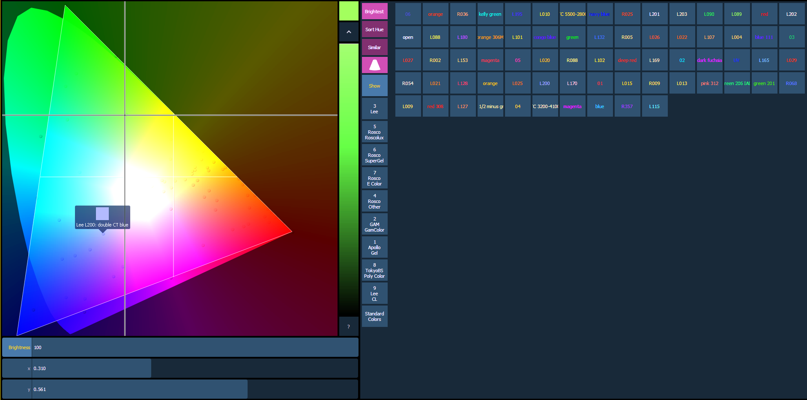
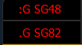
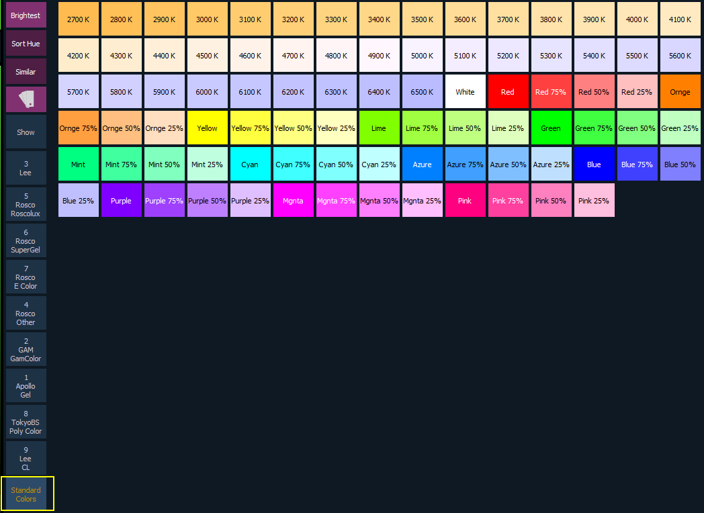

Gel Picker
When the gel picker is opened up with a color space, dots will display on the color space. These dots represent the gels in the currently selected gel book. Hovering over a dot with a mouse will display the gel's name and a color swatch.

The following buttons are also available:
- {Brightest} - determines the color match used. This is helpful when working with fixtures that have more than three color components, such as RGBA, RGBWm or ETC's fixtures. Pressing {Brightest} or {Shift} +a gel from the picker will cycle through the three modes.
- {Brightest} - matches to the brightest match of that chromaticity.
- {Spectral} -matches to the best spectral match chromaticity. However, this mode can remove a lot of the intensity. This is based off of a 575w long life Source Four®.
- {Hybrid} - halfway between the brightest and the best spectral match. In the channel display, a single dot shows best spectral match, 2 dots indicates hybrid, and no dot shows brightest.

- {Sort Hue} - takes the selected gel library and sorts it by hue instead of by gel number.
- {Similar} - will show gels that are in the same selected area of the color picker. Only gels in the same selected gel book will display. You can switch to another gel book though to discover gels in that area.
- {Show Gels as Gel Against White Background} displays the raw gel color as it would look against a white background. This option toggles with {Show Gels as Gel + Lamp Output}.
- {Show Gels as Gel + Lamp Output} displays the gel swatch color as if it was being used with a tungsten lamp.
- {Show} - displays all of the static gels in the show file. This populates from Patch.
- {Standard Colors} - shows a range of White Point from 2700K to 6500K. Also shown are colors located around the triangle and variations of those colors at 25% increments.

How the Gel Picker Affects Scroller and Color Wheel
When possible the Gel Picker will select the closest gel as defined in a scroller or color wheel.
Note: Some devices contain manufacturer specified gel mixes, and will only allow selection from the Gel Picker of the exact gels in their list.
The channel display will show the frame number and the corresponding label that is defined for that frame.